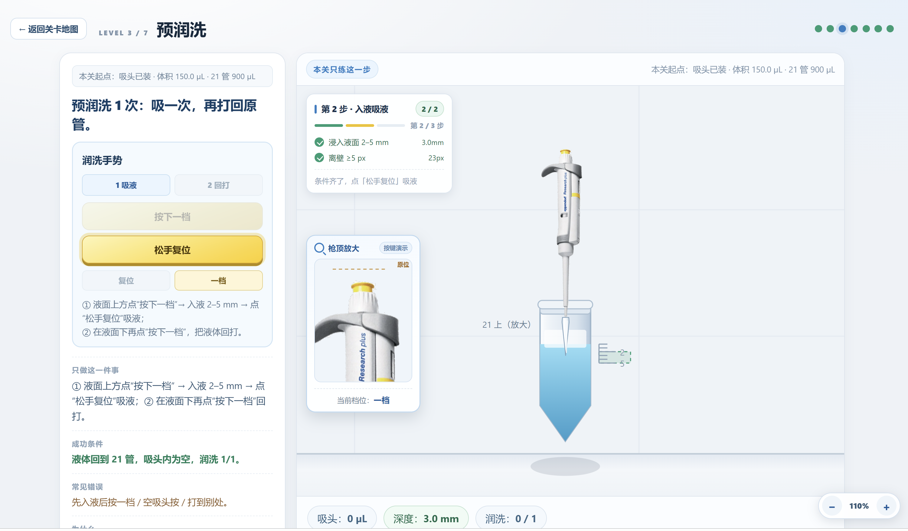

01训练界面Explore the product
看看每一关怎么练。
真实训练截图，会自动播放。点击关卡切换，或聚焦右侧画面后用左右方向键。

01 / 05
LEVEL 1 / 7
02实际操作Real recordings
看实际操作如何进行。
三段产品实录：左侧是佩戴者视角，右侧是系统给出的提示。点击播放，可全屏查看细节。
Recording 01 从操作提示开始
看到当前步骤、目标和需要确认的条件。
Recording 02 把动作变成反馈
每个动作都有状态，错误不会被藏到最后。
Recording 03 一条完整训练路径
从装吸头到退吸头，连续走完七个关卡。